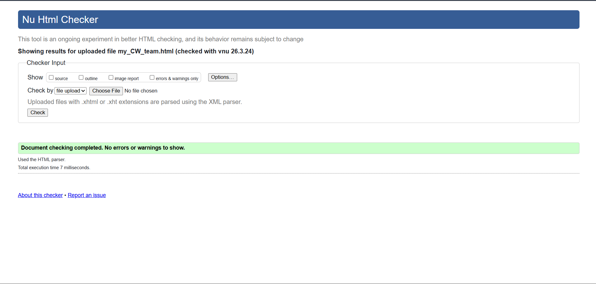
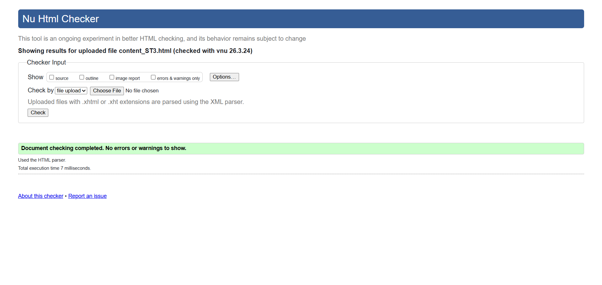

Feedback Page validation report
The Feedback page was tested using the W3C HTML Validator to ensure that the HTML structure followed proper web standards. The validation results confirmed that the form elements, inputs, and overall page structure do not contain major structural errors and that all HTML elements are correctly nested.
Minor warnings were reviewed and corrected during development. These included ensuring all input fields had appropriate labels or placeholders and confirming that all script tags for the form validation were properly placed. After making these adjustments, the page successfully passed validation and meets standard HTML requirements.
Back to Page Editor page
Team Page validation report
The Team page was validated using the W3C HTML validation tool to ensure the markup, classes, and SVG icons were correctly implemented. The validation process confirmed that the HTML structure and embedded SVG social icons were properly formatted.
The flexbox layout and card components used to display team members were checked to ensure that all tags were correctly nested and that attributes such as viewBox for the SVGs were valid. No significant errors were found, and the team page successfully passed validation after minor formatting adjustments.

Back to Page Editor page
Content Page validation report
The Content page (Solutions & Actions) was also tested using the W3C HTML Validator to verify that the page follows correct HTML syntax and structure. The validation confirmed that headings, paragraphs, internal navigation links, and images were correctly used throughout the page.
During validation, minor issues such as missing alternative text for images and spacing inconsistencies were corrected. After resolving these issues, the page successfully met validation standards and complies with recommended web development practices.
